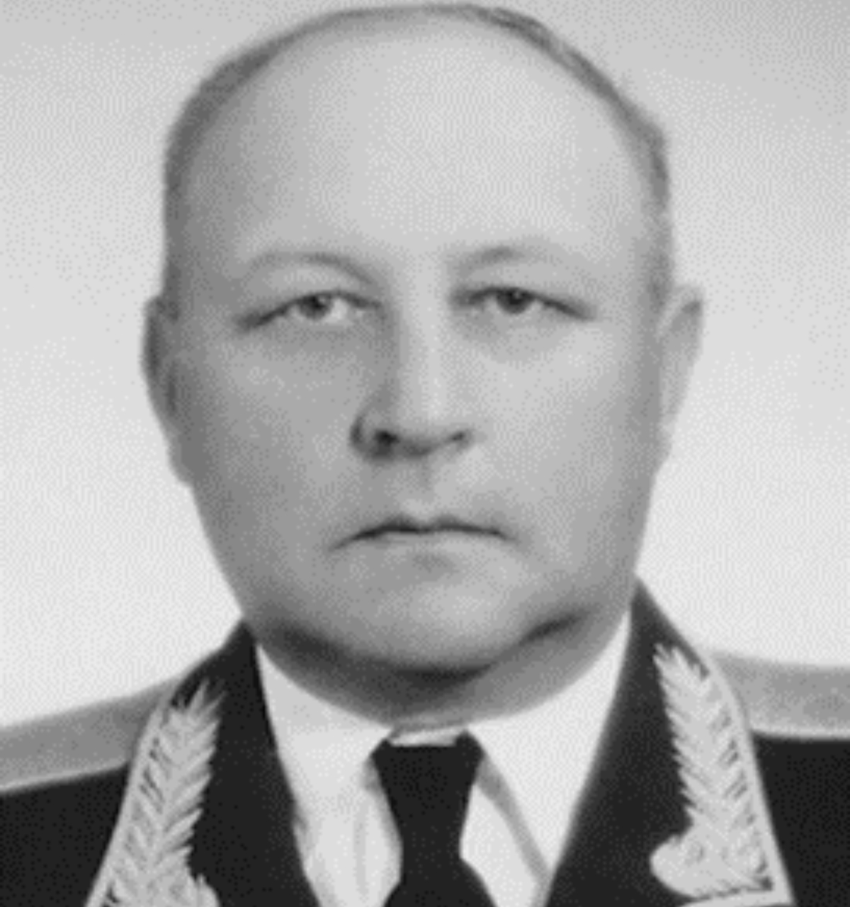

Ленинградская область · Финский залив
Город энергии, природы и сильных людей.
Сосновый Бор — это редкий баланс технологического развития, морского воздуха и комфортной городской среды. Откройте место, где история встречается с будущим.

Сегодня в Сосновом Бору
Чистый воздух · Сильная экономика · Комфортная средаИстория
От старинной деревни до современного центра региона
Истоки
На месте города располагалась деревня Устье, упоминаемая в источниках XVII века. Этот берег веками был важной частью истории Ижорской земли.
Развитие
Сосновый Бор вырос в один из ключевых городов Ленинградской области, объединив промышленный потенциал и качество городской среды.
Идентичность
Сегодня это динамичный город на побережье: с сильной экономикой, культурной жизнью и большим вниманием к экологии.
Почему это важно
Факты, которые формируют характер города
Экологичность
Близость к заливу и городскому лесу создаёт комфортный микроклимат и высокое качество повседневной жизни.
Энергетический центр
Ленинградская АЭС играет стратегическую роль и обеспечивает значительную часть энергопотребления региона.
Экономическая устойчивость
Сосновый Бор остаётся одним из ведущих промышленных и научно-технологических центров области.
Впечатления
Городские пространства и архитектурный ритм


Лица города
Люди, которые развивают Сосновый Бор

Михаил Воронков
Глава Сосновоборского городского округа. Участвует в развитии городской инфраструктуры и социальной среды.

Команда развития
Специалисты образования, культуры и городской среды формируют современный образ города и качество жизни жителей.
Следующий шаг